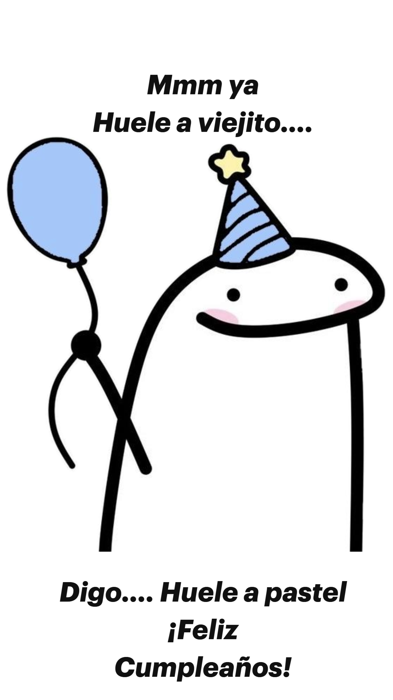
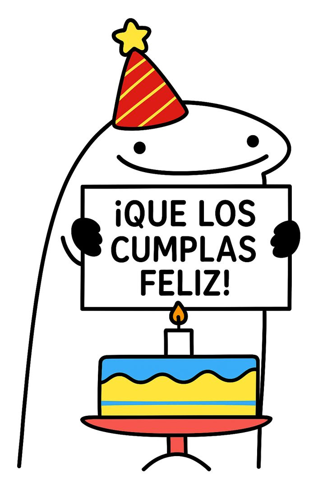

🎈 ¿21 años ya? WOOW 🎈
Eres alguien muy especial para mí… y uff, cómo han pasado los años...
Hoy cumples 21; de verdad que si tú no puedes creerlo, pues yo tampoco. La verdad es que sí es sorprendente, y aunque hace tiempo que no hablamos tanto como antes, no podía dejar pasar esta fecha sin escribirte algo. Porque la verdad es que no todos los días cumple años una persona con la que compartiste tanto y que sigue teniendo un lugar especial en tu vida, aunque el tiempo y la distancia se hayan hecho presentes interfiriendo :(.
Han pasado ya 8 años desde que nos conocimos. Ocho. Se dice fácil, pero dentro de esos años hay tantas memorias, tantas pláticas, tanto de secu-nenes, pero más han sido en pandemia, incluso cuando te puse a leer cosas para mi tarea de catecismo, jaja, unos pasajes bíblicos. Han estado risas, momentos buenos y también silencios que, aunque incómodos a veces, también formaron parte de nuestra historia, sobre todo en estas últimas fechas, meses.
Hemos cambiado, y eso es natural. Cada quien ha tomado su camino, hemos vivido cosas que nos han transformado, y quizás por eso hoy somos personas distintas a las que empezaron esta amistad. Pero eso no borra lo que fuimos ni el aprecio que te tengo.
Hoy quiero desearte un cumpleaños lleno de cosas reales: tranquilidad, alegría, compañía sincera y claridad para lo que venga. Que los 21 te traigan nuevas versiones de ti misma, esperando que todas estas sean positivas; sin embargo, a veces las malas también nos dejan algo por delante, ya sea una experiencia que nos ayuda a darnos cuenta de que lo hemos hecho mal y que hay posibilidad de hacerlo otra vez y mejor, o simplemente que ya no vuelva a ocurrir. También desearte nuevas metas y momentos que te hagan sentir orgullosa de lo que eres y de lo que estás construyendo.
Gracias por haber sido parte de mi vida todos estos años, por dejarme conocerte y por estar presente en etapas importantes para mí. Y aunque la vida nos tenga un poco alejados, quiero que sepas que todavía valoro muchísimo nuestra historia. Tal vez no sientas lo mismo, pero quiero decirte que, aunque estamos en el proceso de la adultez, en el fondo de mi corazón aún mantendré esa bella amistad que hemos construido a través de largos y difíciles años. Sí he conocido personas nuevas, pero hay cosas en la vida que simplemente es difícil reemplazar o simplemente no se pueden; es como el agua, la puedes cambiar por un refresco, pero no es lo mismo.
"Lo valioso no se reemplaza, simplemente se guarda en un rincón especial del corazón."
Quise agregar estos breves renglones ya que hablan sobre el paso del tiempo, como nos quita momentos que nos gustara volver a repetir:
Nos aferramos a recuerdos que ya no tienen a dónde volver. Las risas de antes suenan ahora como ecos lejanos, y las personas que fueron nuestro mundo se han convertido en sombras en mi memoria. El tiempo no ha curado nada, solo ha aprendido a guardar el dolor en silencio. Qué irónica es la vida: justo cuando empezamos a entender lo valioso, ya es demasiado tarde para tenerlo cerca.
Caminamos entre días que parecen iguales, pero cada uno nos aleja más de aquello que alguna vez fuimos. Lo que era rutina, ahora es memoria. Lo que era risa, ahora es silencio. Queda un vacío extraño, como si el tiempo se hubiera llevado algo que nunca nos devolvió… y que nadie más podrá darnos.
Te mando un abrazo fuerte, de esos que no necesitan palabras, de aquellos que no son de los comunes, te mando ese abrazo que se siente en el alma.